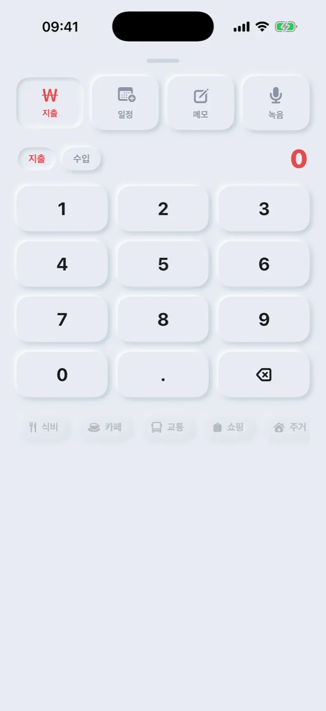
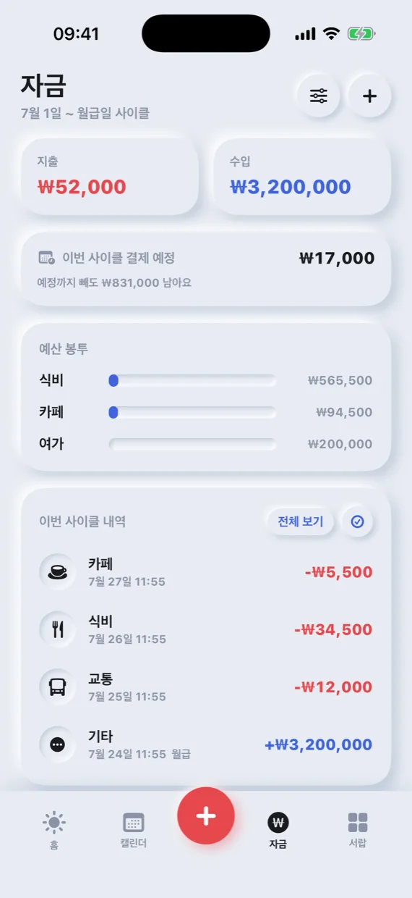
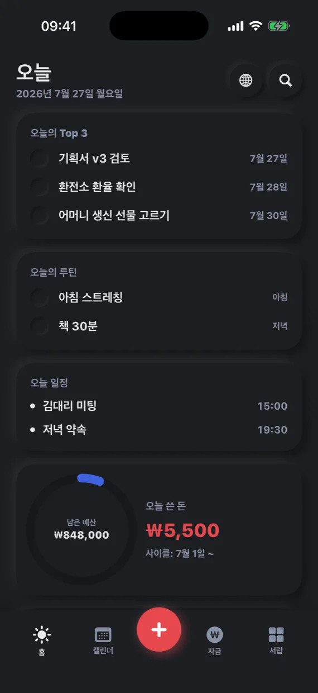

How we built it
The whole day on one screen
The Today screen shows today's top three tasks, routines, schedule, remaining budget and today's spending at once. Open it once in the morning and the day is in order, without switching between apps.
The tabs below and the big center button take you straight to the calendar, money and the tools in the drawer.
Capture it the moment it comes to mind
Tap the center button to enter spending, income, events, notes or voice recordings on one screen. Type the amount on the number pad, pick a category, and you're done.
Each entry is added to both the calendar date and the money screen, so tapping a date later shows that day's events and money together.

Money at a glance
The money screen shows spending and income totals, budget envelopes and this cycle's transactions, and the subscriptions screen lists next payment dates and monthly fees.
The exchange rate board converts between currencies such as the won, dollar, yen, dong and euro at a glance.

On my device, my way
Use it without creating an account, with records saved on the device first. Turn on iCloud sync to continue on your other devices.
Supports Home Screen widgets, a share extension, App Shortcuts and dark mode, and the app is available in Korean, English and Vietnamese.
